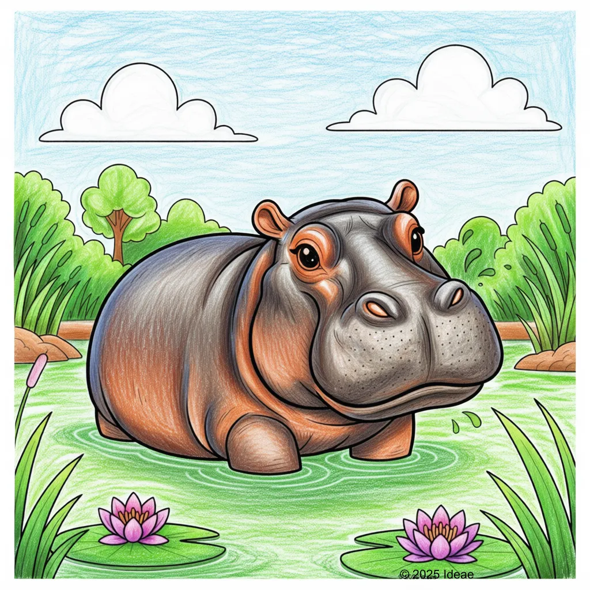

Hippopotamus
Hippopotamus amphibius

Key Characteristics
- Hippos spend almost all day cooling off in the water, only coming out at night to eat grass.
- Even though they look chubby, Hippos are very fast runners, especially when they feel threatened!
- Their skin makes a kind of pink, oily 'sunscreen' to keep them from getting sunburned.
Peculiar Facts (Fun Facts!)
- The Hippo's name means 'river horse' in Greek, but it's actually more closely related to pigs and whales!
- Their teeth (canines) can grow up to 20 inches long—that's almost as long as your arm!
- Baby hippos are born underwater, but they can swim to the surface right away to take a breath.!